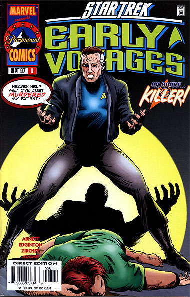
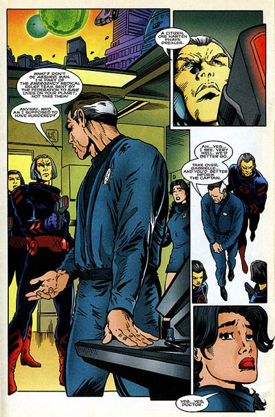

|


|
Gnese
| Episdios I Reflexes
| Palavras do autor | Palavras
do artista Star Trek
Early Voyages, n 08 setembro de 1997  Histria: Dan Abnett e Ian Edginton Material produzido por Salvador Nogueira para o Trek Brasilis
Data Estelar: 360.3 Sinopse: A Enterprise est em Neyda Prime atendendo a uma emergncia mdica, quando o doutor Philip Boyce preso, sob a acusao de assassinar um de seus pacientes. Estranhamente, ele no reage priso, como se fosse de fato culpado. Pike informado do incidente pela enfermeira Carlotti e vai visitar o doutor. Ele diz que far tudo para tir-lo de l, mas Boyce fala que isso no necessrio --j que ele mesmo culpado pelo assassinato. Insatisfeito, o capito da Enterprise procurar as autoridades locais, que apresentam um vdeo que mostra Boyce injetando um medicamente em dose letal no paciente. A autpsia confirmou que a morte ocorreu em razo da medicao ministrada pelo doutor. Pike ainda no pode acreditar no que v. Por Boyce ser um aliengena naquele mundo, ele tem direito a um defensor. Por isso, o embaixador Vulcano Toluk designado para defend-lo. Em conversa com o doutor, Toluk percebe que Boyce est mentalmente doente. Entretanto, diz a Pike que ser difcil provar tal afirmao, a fim de livrar o mdico da acusao. Enquanto isso, a enfermeira Carlotti e a ordenana Colt comentam o quanto o doutor andava estranho nos ltimos tempos, falando sozinho e lutando contra si mesmo. Chega a noite no complexo em que Boyce est preso, e ele, tomado por uma fria intensa, consegue fugir. Ele est armado e corre at encontrar Toluk. Quando os guardas chegam, o Vulcano diz que no h motivo para correria, j que Boyce est sob controle. Ele revela tambm o que estava atormentando o pobre doutor. Aps fazer um elo de mentes com o mdico, Toluk descobriu que ele estava abrigando trs almas de uma espcie chamada Jultha --pessoas que tm traos similares aos Vulcanos, incluindo a tradio da transmisso do Katra-- sem saber, depois de ter procurado sobreviventes em um acidente de nave quando ele ainda era jovem. Aps tanto tempo na mente do doutor, as mentes atormentadas acabaram enlouquecendo. O paciente que ele estava tratando em Neyda Prime era o antigo lder rion que havia causado a morte dos trs Julthanos. Tendo a chance de mat-lo, os aliengenas no a perderam, usando o corpo de Boyce. Toluk consegue colocar as almas em um cristal teleptico, que ele levar de volta ao mundo natal Jultha. Boyce est finalmente livre de seu tormento, e tambm das acusaes que pesavam sobre ele. A Enterprise finalmente pode seguir viagem.  Comentrios Finalmente a histria que vem sendo preparada para o doutor Boyce h vrias edies! Descobrimos finalmente por que o mdico tem se comportado to estranhamente nos ltimos tempos. O enredo no particularmente brilhante, mas enquanto h o mistrio por trs do comportamento de Boyce a histria se sustenta. Na verdade, el evolui muito bem at a concluso --quando vtima de um verdadeiro anticlmax. simplesmente horrvel a forma como o mistrio solucionado, com Toluk contando a todos qual a resposta. Seria muito melhor se pistas do problema tivessem sido deixadas ao longo do caminho e coletadas pelo pessoal da Enterprise, mas isso certamente levaria mais tempo e pginas do que as que foram gastas nessa edio. Se havia a necessidade de fechar essa histria nessa mesma edio, a soluo at aceitvel. Mas mais uma vez a reduo de pginas de 40 para 32 prejudica o andamento. Essas oito pginas certamente poderiam ter feito alguma diferena. Dois pontos interessantes so levantados aqui. Um deles a amizade dos tripulantes da Enterprise para com Boyce, especialmente por parte de Pike e da enfermeira Carlotti. O outro a conversa de Spock com Toluk. Percebemos aqui que nosso Vulcano favorito ficou famoso a entrar para a Academia da Frota --mostrando que isso era novidade na poca. Alm disso, descobrimos que os Vulcanos em geral no so muito fs da deciso de Spock, o que nos lembra muito dos aliengenas que vemos na srie Enterprise. Certamente os Vulcanos levaram um bom tempo para olhar os humanos de igual para igual --e Spock teve um papel fundamental nisso. Um bom ponto para a cronologia e a histria da srie que abordado de forma equilibrada, realista e interessante aqui. Tudo bem que a soluo, no final, fica um pouco mal contada e a histria cheia de convenincias. Mas realmente no d para dizer que essas falhas tornem "Immortal Wounds" algo que no valha a pena ser lido.
|